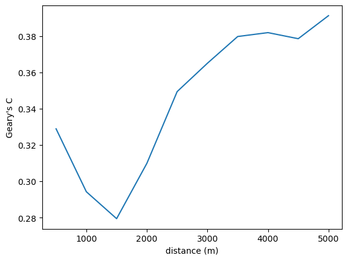
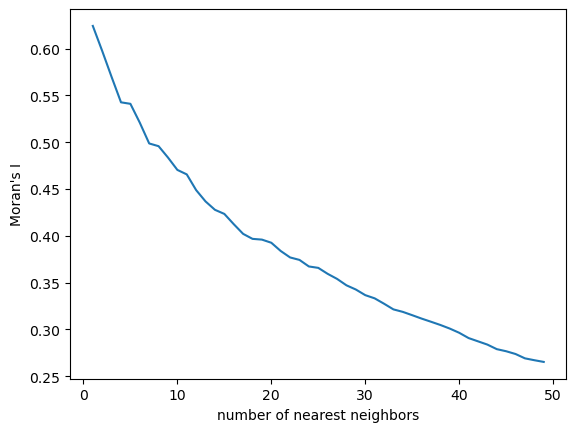
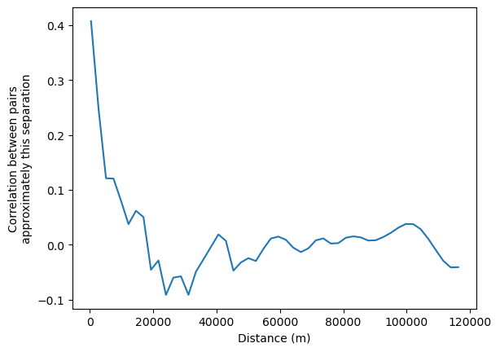

This page was generated from build/.jupyter_cache/executed/034f207ae7a06a242fd54db721b6bad0/base.ipynb.
Interactive online version:

[1]:
%load_ext watermark
%watermark -a 'eli knaap'
%load_ext autoreload
%autoreload 2
import geopandas as gpd
from libpysal import examples
from esda import correlogram
Author: eli knaap
The autoreload extension is already loaded. To reload it, use:
%reload_ext autoreload
[2]:
sac = gpd.read_file(examples.load_example("Sacramento1").get_path("sacramentot2.shp"))
[3]:
sac = sac.to_crs(sac.estimate_utm_crs()) # now in meters)
[4]:
correlogram?
[5]:
from esda import G, Geary, Moran
[6]:
# Create a liste of distances between 500 and 5000 (meters, here) in increments of 500
distances = [i + 500 for i in range(0, 5000, 500)]
[7]:
distances
[7]:
[500, 1000, 1500, 2000, 2500, 3000, 3500, 4000, 4500, 5000]
[8]:
prof = correlogram(sac.centroid, sac.HH_INC, distances, Moran)
[9]:
prof.head()
[9]:
| y | w | permutations | n | z | z2ss | EI | VI_norm | seI_norm | VI_rand | ... | z_rand | p_norm | p_rand | sim | p_sim | EI_sim | seI_sim | VI_sim | z_sim | p_z_sim | |
|---|---|---|---|---|---|---|---|---|---|---|---|---|---|---|---|---|---|---|---|---|---|
| 500 | [52941, 51958, 32992, 54556, 50815, 60167, 490... | <libpysal.weights.distance.DistanceBand object... | 999 | 403 | [0.27506115837390277, 0.21948138443207246, -0.... | 1.260604e+11 | -0.002488 | 0.497534 | 0.705361 | 0.496239 | ... | 0.086188 | 9.314058e-01 | 9.313166e-01 | [-0.16000777006309336, 0.35057087080076826, 1.... | 0.467 | 0.030311 | 0.740235 | 0.547948 | 0.037713 | 4.849582e-01 |
| 1000 | [52941, 51958, 32992, 54556, 50815, 60167, 490... | <libpysal.weights.distance.DistanceBand object... | 999 | 403 | [0.27506115837390277, 0.21948138443207246, -0.... | 1.260604e+11 | -0.002488 | 0.014259 | 0.119409 | 0.014221 | ... | 4.147088 | 3.447621e-05 | 3.367309e-05 | [-0.15837501828903583, 0.16160116340628766, -0... | 0.001 | -0.003759 | 0.116280 | 0.013521 | 4.264085 | 1.003616e-05 |
| 1500 | [52941, 51958, 32992, 54556, 50815, 60167, 490... | <libpysal.weights.distance.DistanceBand object... | 999 | 403 | [0.27506115837390277, 0.21948138443207246, -0.... | 1.260604e+11 | -0.002488 | 0.004586 | 0.067719 | 0.004574 | ... | 6.763620 | 1.430242e-11 | 1.345857e-11 | [-0.03211300536047097, -0.02421367694402564, -... | 0.001 | -0.003493 | 0.067958 | 0.004618 | 6.745910 | 7.603567e-12 |
| 2000 | [52941, 51958, 32992, 54556, 50815, 60167, 490... | <libpysal.weights.distance.DistanceBand object... | 999 | 403 | [0.27506115837390277, 0.21948138443207246, -0.... | 1.260604e+11 | -0.002488 | 0.002164 | 0.046515 | 0.002158 | ... | 12.164298 | 5.846476e-34 | 4.815656e-34 | [-0.10012000185819878, 0.0322173415965063, -0.... | 0.001 | -0.003062 | 0.046191 | 0.002134 | 12.245928 | 8.832224e-35 |
| 2500 | [52941, 51958, 32992, 54556, 50815, 60167, 490... | <libpysal.weights.distance.DistanceBand object... | 999 | 403 | [0.27506115837390277, 0.21948138443207246, -0.... | 1.260604e+11 | -0.002488 | 0.001481 | 0.038483 | 0.001477 | ... | 13.102771 | 3.974924e-39 | 3.174519e-39 | [-0.04096550715030278, 0.027544312005584316, 0... | 0.001 | -0.002137 | 0.038358 | 0.001471 | 13.119279 | 1.276766e-39 |
5 rows × 23 columns
[10]:
ax = prof.I.plot()
ax.set_xlabel("distance (m)")
ax.set_ylabel("Moran's I")
[10]:
Text(0, 0.5, "Moran's I")

[11]:
prof = correlogram(sac.centroid, sac.HH_INC, distances, statistic=Geary)
[12]:
ax = prof.C.plot()
ax.set_xlabel("distance (m)")
ax.set_ylabel("Geary's C")
[12]:
Text(0, 0.5, "Geary's C")

[13]:
prof = correlogram(sac.centroid, sac.HH_INC, distances, statistic=G)
[14]:
ax = prof.G.plot()
ax.set_xlabel("distance (m)")
ax.set_ylabel("Getis-Ord G")
[14]:
Text(0, 0.5, 'Getis-Ord G')

[15]:
prof = correlogram(sac.centroid, sac.HH_INC, statistic=G)
ax = prof.G.plot()
ax.set_xlabel("distance (m)")
ax.set_ylabel("Getis-Ord G")
[15]:
Text(0, 0.5, 'Getis-Ord G')

[16]:
kdists = list(range(1, 50))
[17]:
kcorr = correlogram(sac.centroid, sac.HH_INC, kdists, distance_type="knn")
[18]:
ax = kcorr.I.plot()
ax.set_xlabel("number of nearest neighbors")
ax.set_ylabel("Moran's I")
[18]:
Text(0, 0.5, "Moran's I")

[19]:
nonparametric = correlogram(sac.centroid, sac.HH_INC, statistic="lowess")
ax = nonparametric.lowess.plot()
ax.set_xlabel("Distance (m)")
ax.set_ylabel("Correlation between pairs\napproximately this separation")
[19]:
Text(0, 0.5, 'Correlation between pairs\napproximately this separation')

[ ]: